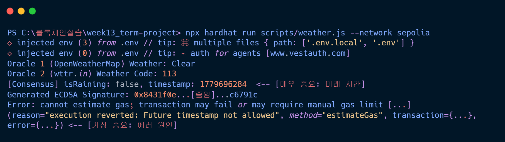
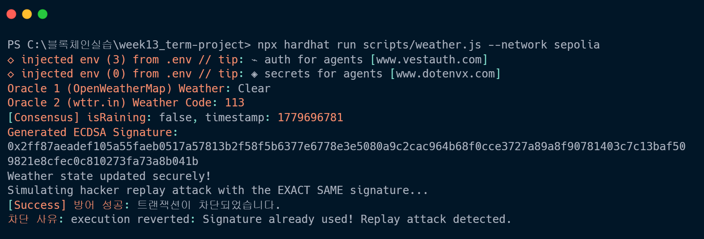
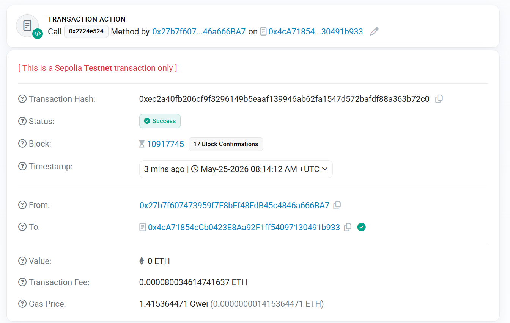
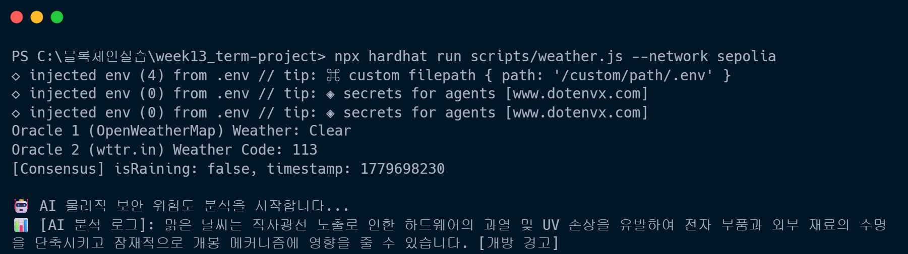

외부 기상 데이터 검증 및 리플레이 공격 방어 시나리오
외부 기상 데이터(강수량 등)와 AI 기반 이상 패턴 분석 및 보조 로그 생성에 따라 자산의 이동이 안전하게 제어되는 조건부 스마트 컨트랙트 시스템 구축.
개발 과정에서 발견한 치명적인 보안 취약점을 주도적으로 방어하기 위해 시스템을 진화.
단일 장애점(SPOF) 리스크 내포
취약점 원천 차단 및 보안 완성
| Smart Contract(온체인) | Solidity (0.8.20), OpenZeppelin (ECDSA) |
|---|---|
| Infrastructure(배포 및 테스트) | Hardhat, Sepolia Testnet, MetaMask |
| Middleware(오프체인 서버) | Node.js, Ethers.js (서명 및 블록체인 통신), Axios |
| Data & AI(오라클 및 위험도 분석) | OpenWeatherMap API, wttr.in, Google Gemini 2.5 Flash API |
무결성을 유지하기 위한 3단계 방어벽(Require) 구조
목표: 스마트 컨트랙트 기초 배포 및 오프체인 미들웨어 연동
Future timestamp not allowed 에러 발생.
Date.now() - 60초로 타임스탬프 버퍼
부여.
💡 [이미지] 해결 전 튕겨 나갔던 에러 로그 화면usedSignatures 매핑을 추가하여 서명을 1회용(OTP)으로 강제.Signature already used! 에러 반환 및 완벽 차단.

💡 [이미지] 터미널 해커 차단 성공 로그
💡 [이미지] Etherscan 성공/Revert 기록목표: 하드웨어 금고의 물리적 개방 위험도를 AI가 정성적으로 분석.
404 에러 발생.
gemini-2.5-flash로 마이그레이션 적용.

💡 [이미지] AI의 개방 경고 로그 캡처